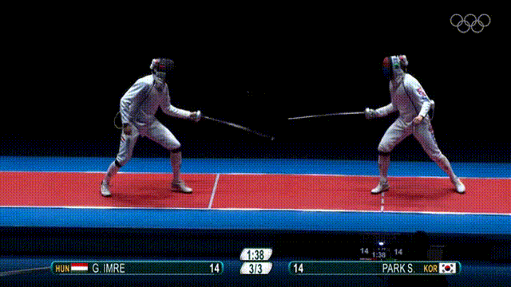
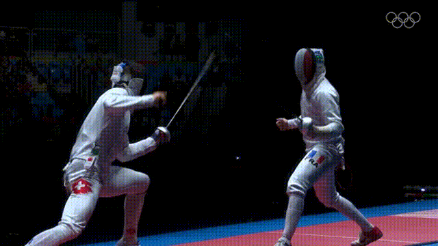

Histórico:
__________________________________________________________________________________________________________________
A esgrima teve inicio na Grécia Antiga como uma forma de combate e educação militar. Ao longo dos séculos, evoluiu-se como uma técnica de combate individual e se tornou mais formalizada durante a Idade Média. No século XIX, a esgrima moderna começou a se desenvolver na Europa, especialmente na França. E sua popularização veio devido a inclusão nos Jogos Olímpicos modernos. Desde a primeira edição dos Jogos Olímpicos (em 1896).
Principais Regras:
__________________________________________________________________________________________________________________
Toque Válido
Florete: Apenas a ponta
Sabre: Apenas a lamina
Espada: Ponta e lamina
Área Alvo
Florete: Apenas o tronco
Sabre: Cintura para cima (braços, cabeça, e tronco)
Espada: Corpo inteiro
Prioridade (ou Direito de Passagem)
Um sistema de prioridade que determina qual esgrimista tem o direito de marcar o ponto em uma situação de ataque simultâneo. O esgrimista que inicia um ataque válido primeiro tem a prioridade. O oponente deve se defender antes de poder contra-atacar e marcar um ponto.
Tocar antes de Sair da Pista
Durante um confronto, os esgrimistas devem permanecer dentro dos limites da pista. Se um esgrimista sair da pista antes de realizar um toque válido, o toque não é considerado válido.
Conduta Esportiva
A esgrima é um esporte que valoriza a conduta esportiva e o respeito entre os esgrimistas. É esperado que os esgrimistas demonstrem fair play, sigam as regras e respeitem oponentes e árbitros. Condutas antidesportivas, como insultos ou comportamentos agressivos, são punidas com penalidades.
Observações
É importante ressaltar que essas são apenas algumas das principais regras da esgrima. Cada arma tem suas próprias nuances e regras específicas que devem ser seguidas. Para uma compreensão completa das regras da esgrima, é recomendável consultar o regulamento oficial da Federação Internacional de Esgrima (FIE) ou a entidade nacional responsável pelo esporte em seu país. Porém, das mais importantes, são essas acima.
Física Aplicada:
__________________________________________________________________________________________________________________
Velocidade média (v)
v = Δs / Δt
A velocidade média é calculada dividindo a variação da posição (Δs) pela variação do tempo (Δt). Na esgrima, pode ser usada para analisar a velocidade dos movimentos da lâmina ou do esgrimista.

Aceleração média (a)
a = Δv / Δt
A aceleração média é calculada dividindo a variação da velocidade (Δv) pela variação do tempo (Δt). Pode ser útil para avaliar a rapidez com que a velocidade da lâmina ou do esgrimista muda.
Força (F)
F = m . a
A força é calculada multiplicando a massa (m) de um objeto pela aceleração (a) que ele experimenta. Na esgrima, a força é relevante para entender a resistência dos materiais da lâmina e a intensidade dos golpes.
Lei de Hooke:
Fel = k . Δx
A lei de Hooke descreve a relação entre a força (F) aplicada a uma mola, a constante elástica (k) da mola e a deformação Δx. Na esgrima, a lei de Hooke pode ser aplicada para entender a flexão da lâmina e sua recuperação após um golpe.

Essas são apenas algumas das fórmulas básicas que podem ser aplicadas na esgrima. Dependendo do aspecto específico que você deseja analisar, podem existir outras fórmulas e conceitos físicos mais avançados que podem ser úteis.
__________________________________________________________________________________________________________________